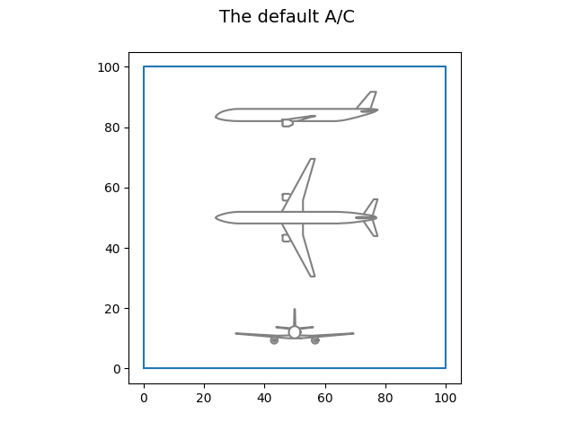
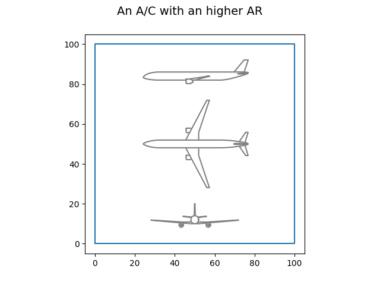

Note
Click here to download the full example code
The H2TurboFan discipline¶
from numpy import array
from lh2pac.gemseo.discipline import H2TurboFan
from lh2pac.gemseo.utils import draw_aircraft
from lh2pac.gemseo.utils import get_aircraft_data
First, we instantiate the discipline:
discipline = H2TurboFan()
Then, we can have a look at its input names:
discipline.get_input_data_names()
Out:
['thrust', 'bpr', 'area', 'aspect_ratio', 'tgi', 'tvi', 'sfc', 'mass', 'drag']
output names:
discipline.get_output_data_names()
Out:
['mtow', 'tofl', 'vapp', 'vz_mcl', 'vz_mcr', 'oei_path', 'ttc', 'far', 'fuel', 'coc']
and default input values:
discipline.default_inputs
Out:
{'area': array([160.]), 'aspect_ratio': array([9.5]), 'thrust': array([125000.]), 'bpr': array([8.5]), 'drag': array([1.]), 'tgi': array([0.3]), 'tvi': array([0.845]), 'sfc': array([1.]), 'mass': array([1.])}
and execute the discipline with these values:
discipline.execute()
Out:
{'area': array([160.]), 'aspect_ratio': array([9.5]), 'thrust': array([125000.]), 'bpr': array([8.5]), 'drag': array([1.]), 'tgi': array([0.3]), 'tvi': array([0.845]), 'sfc': array([1.]), 'mass': array([1.]), 'vapp': array([70.64663708]), 'mtow': array([84264.87197867]), 'coc': array([5790.24820306]), 'vz_mcr': array([1.11425584]), 'far': array([13.14324743]), 'fuel': array([994.73460336]), 'vz_mcl': array([5.53241387]), 'oei_path': array([0.01700101]), 'tofl': array([2144.18746791]), 'ttc': array([1094.19026816])}
We can print the aircraft data:
aircraft_data = get_aircraft_data(discipline)
print(aircraft_data)
Out:
---------------------------------------------------------------------------
Drag factor = 1.000 (0.99 =< kcx =< 1.03)
SFC factor = 1.000 (0.99 =< ksfc =< 1.03)
Mass factor = 1.000 (0.99 =< kmass =< 1.03)
Tank Volumetric Index = 0.845 m3-LH2 / m3-(LH2+Tank), (0.6 =< vi =< 0.85)
Tank Gravimetric Index = 0.300 kg-LH2 / kg-(LH2+Tank), (0.25 =< gi =< 0.305)
Reference thrust = 125.0 kN, (100 =< thrust =< 150)
By Pass Ratio = 8.5 (5 =< bpr =< 12)
Reference area = 160.0 m2, (120 =< area =< 200)
Aspect ratio = 9.5 (7 =< ar =< 12)
---------------------------------------------------------------------------
Criterion, Max Take Off Weight = 84264.9 kg
Criterion, Cost mission fuel block = 994.7 kg
Criterion, Cash Operating Cost = 5790.2 $/trip
Constraint, Take Off Field Length = 2144.2 m (must be =< 2200 m)
Constraint, Approach speed = 137.3 kt (must be =< 137 kt)
Constraint, Vertical speed, MCL rating, TOC = 1089.1 ft/min (must be >= 300 ft/min)
Constraint, Vertical speed, MCR rating, TOC = 219.3 ft/min (must be >= 0 ft/min)
Constraint, One Engine Inoperative climb path = 1.70 % (must be >= 1.1%)
Constraint, Time To Climb = 18.2 min (must be =< 25 min)
Constraint, fuselage aspect ratio = 13.143 (must be =< 13.4)
and draw the aircraft:
draw_aircraft(discipline, "The default A/C")

Out:
/home/mickael/ModIA_5A/Metamodelisation/lh2pac/src/lh2pac/marilib/aircraft/tool/drawing.py:287: UserWarning: FigureCanvasAgg is non-interactive, and thus cannot be shown
plt.show()
Lastly, we can execute the discipline with a higher aspect ratio:
discipline.execute({"aspect_ratio": array([12])})
Out:
{'thrust': array([125000.]), 'bpr': array([8.5]), 'area': array([160.]), 'aspect_ratio': array([12]), 'tgi': array([0.3]), 'tvi': array([0.845]), 'sfc': array([1.]), 'mass': array([1.]), 'drag': array([1.]), 'vapp': array([70.64457577]), 'mtow': array([83953.10807835]), 'coc': array([5787.04862876]), 'vz_mcr': array([2.02629216]), 'far': array([12.96364774]), 'fuel': array([943.30955561]), 'vz_mcl': array([6.20068054]), 'oei_path': array([0.02229883]), 'tofl': array([2130.16395761]), 'ttc': array([1014.59863128])}
print the aircraft data:
aircraft_data = get_aircraft_data(discipline)
print(aircraft_data)
Out:
---------------------------------------------------------------------------
Drag factor = 1.000 (0.99 =< kcx =< 1.03)
SFC factor = 1.000 (0.99 =< ksfc =< 1.03)
Mass factor = 1.000 (0.99 =< kmass =< 1.03)
Tank Volumetric Index = 0.845 m3-LH2 / m3-(LH2+Tank), (0.6 =< vi =< 0.85)
Tank Gravimetric Index = 0.300 kg-LH2 / kg-(LH2+Tank), (0.25 =< gi =< 0.305)
Reference thrust = 125.0 kN, (100 =< thrust =< 150)
By Pass Ratio = 8.5 (5 =< bpr =< 12)
Reference area = 160.0 m2, (120 =< area =< 200)
Aspect ratio = 12.0 (7 =< ar =< 12)
---------------------------------------------------------------------------
Criterion, Max Take Off Weight = 83953.1 kg
Criterion, Cost mission fuel block = 943.3 kg
Criterion, Cash Operating Cost = 5787.0 $/trip
Constraint, Take Off Field Length = 2130.2 m (must be =< 2200 m)
Constraint, Approach speed = 137.3 kt (must be =< 137 kt)
Constraint, Vertical speed, MCL rating, TOC = 1220.6 ft/min (must be >= 300 ft/min)
Constraint, Vertical speed, MCR rating, TOC = 398.9 ft/min (must be >= 0 ft/min)
Constraint, One Engine Inoperative climb path = 2.23 % (must be >= 1.1%)
Constraint, Time To Climb = 16.9 min (must be =< 25 min)
Constraint, fuselage aspect ratio = 12.964 (must be =< 13.4)
and draw the aircraft:
draw_aircraft(discipline, "An A/C with an higher AR")

Out:
/home/mickael/ModIA_5A/Metamodelisation/lh2pac/src/lh2pac/marilib/aircraft/tool/drawing.py:287: UserWarning: FigureCanvasAgg is non-interactive, and thus cannot be shown
plt.show()
Total running time of the script: ( 0 minutes 4.029 seconds)
Download Python source code: plot_h2turbo_fan.py